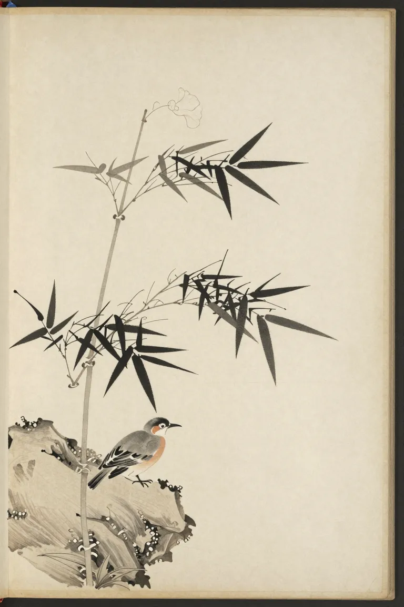

Hu Zhengyans verksted skar mange små blokker til ett bilde (douban) og trykket dem etter hverandre på ett ark. Tørre blokker presset papiret (gonghua) og hevet omrisset av et kronblad eller en sky.

Kjerneidé
En side i en malerhåndbok kan bære den myke fargen fra en rull når trykkeren deler bildet i små blokker som passer sammen som et puslespill.
Designprinsipper
Del hvert bilde etter farge i små blokker, opptil dusinvis til én side, og trykk dem én etter én på samme ark.
Grader fargen på én blokk (en våtpenseleffekt) slik at ett kronblad eller blad skifter fra blekt til dypt.
Trykk nøkkelkonturen i lys farge, med en tynn linje, og la fargen bære formen.
Press en tørr blokk inn i arket (gonghua) for å heve omrisset av et kronblad, en sky eller en bølge, uten farge på den.
Velg et stille motiv fra de lærde: en plomme, bambus, en stein, en fugl eller en orkidé.
Bruk bleke, klare farger: rose, mosegrønt, vannblått og blekkgrått.
Legg til et kort dikt i kalligrafi og et rødt segl.